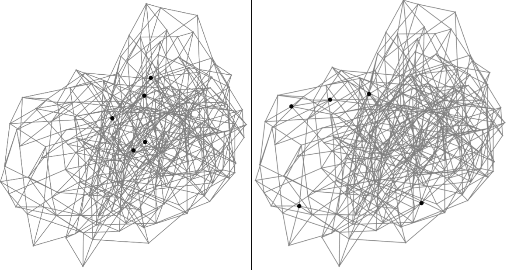
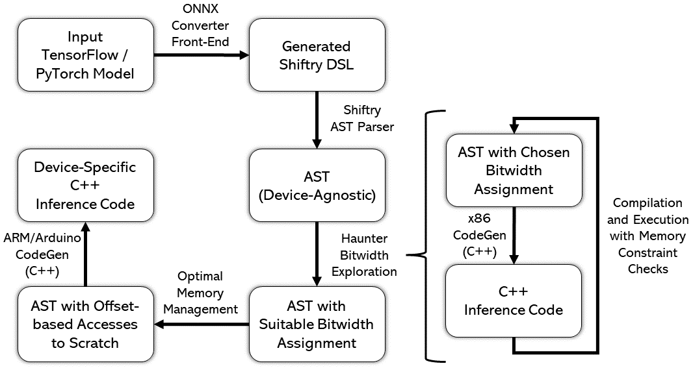
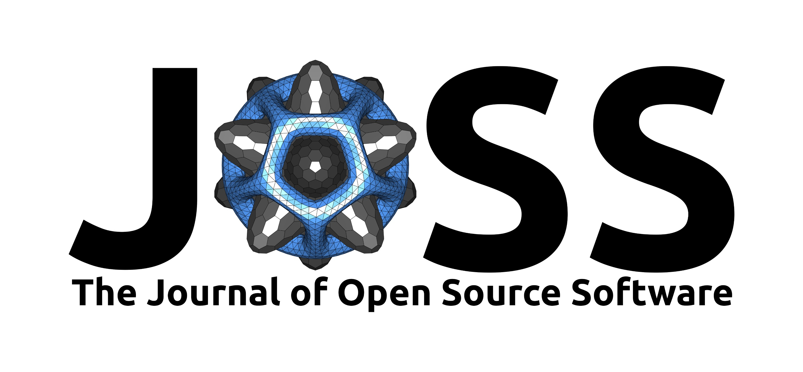
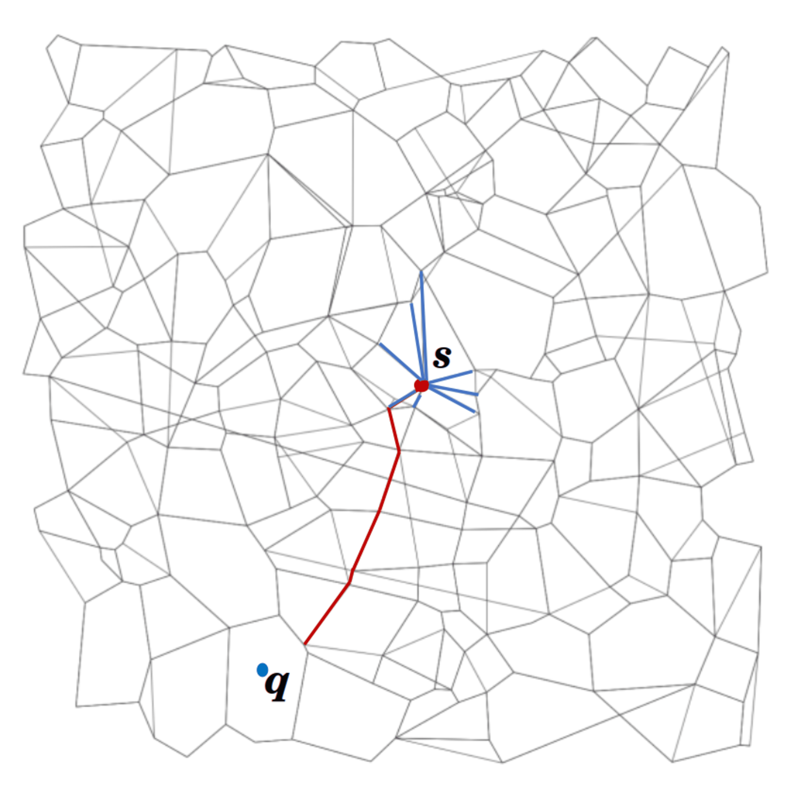

|
I am a CS PhD student at University of Toronto, fortunate to be advised by Prof. Ricardo Baptista and Prof. Murat Erdogdu. My current research interests include theoretical and practical aspects of Machine Learning for Systems and Systems for Machine Learning. Previously, I was a Research Fellow at Microsoft Research India, where I worked with Dr. Harsha Simhadri, Dr. Ravishankar Krishnaswamy and Dr. Rahul Sharma as a member of the Algorithms group. Long ago, I was a CS undergrad at IIT Patna. |
| |
|  |
abstract /
bibtex /
paper
State-of-the-art algorithms for Approximate Nearest Neighbor Search (ANNS) such as DiskANN, FAISS, and HNSW build data dependent indices that offer substantially better accuracy and search efficiency over data-agnostic indices by overfitting to the index data distribution. When the query data is drawn from a different distribution, for example when index represents image embeddings and query represents textual embeddings, such algorithms lose much of this performance advantage. On a variety of datasets, for a fixed recall target, latency is worse by an order of magnitude or more for Out-Of-Distribution (OOD) queries as compared to In-Distribution (ID) queries. The question we address in this work is whether ANNS algorithms can be made efficient for OOD queries if the index construction is given access to a small sample set of these queries. We answer positively by presenting OOD-DiskANN, which uses a sparing sample (1% of index set size) of OOD queries, and provides up to 40% improvement in mean query latency over SoTA algorithms of a similar memory footprint. OOD-DiskANN is scalable and has the efficiency of graph-based ANNS indices. Some of our contributions can improve query efficiency for ID queries as well.
@misc{https://doi.org/10.48550/arxiv.2211.12850,
doi = {10.48550/ARXIV.2211.12850},
url = {https://arxiv.org/abs/2211.12850},
author = {Jaiswal, Shikhar and Krishnaswamy,
Ravishankar and Garg, Ankit and Simhadri,
Harsha Vardhan and Agrawal, Sheshansh},
keywords = {Machine Learning (cs.LG), Information
Retrieval (cs.IR), FOS: Computer and information
sciences, FOS: Computer and information sciences},
title = {OOD-DiskANN: Efficient and Scalable Graph
ANNS for Out-of-Distribution Queries},
publisher = {arXiv},
year = {2022},
copyright = {Creative Commons Attribution 4.0
International}
}
|
| |
|  |
abstract /
bibtex /
paper /
arxiv /
code /
talk /
slides /
blog
Running machine learning inference on tiny devices, known as TinyML, is an emerging research area. This task requires generating inference code that uses memory frugally, a task that standard ML frameworks are ill-suited for. A deployment framework for TinyML must be a) parametric in the number representation to take advantage of the emerging representations like posits, b) carefully assign high-precision to a few tensors so that most tensors can be kept in low-precision while still maintaining model accuracy, and c) avoid memory fragmentation. We describe MinUn, the first TinyML framework that holistically addresses these issues to generate efficient code for ARM microcontrollers (e.g., Arduino Uno, Due and STM32H747) that outperforms the prior TinyML frameworks.
@inproceedings{10.1145/3589610.3596278,
author = {Jaiswal, Shikhar and Goli, Rahul Kranti
Kiran and Kumar, Aayan and Seshadri, Vivek and
Sharma, Rahul},
title = {MinUn: Accurate ML Inference on
Microcontrollers},
year = {2023},
isbn = {9798400701740},
publisher = {Association for Computing Machinery},
address = {New York, NY, USA},
url = {https://doi.org/10.1145/3589610.3596278},
doi = {10.1145/3589610.3596278},
abstract = {Running machine learning inference on
tiny devices, known as TinyML, is an emerging
research area. This task requires generating
inference code that uses memory frugally, a task
that standard ML frameworks are ill-suited for. A
deployment framework for TinyML must a) be
parametric in the number representation to take
advantage of the emerging representations like
posits, b) carefully assign high-precision to a
few tensors so that most tensors can be kept in
low-precision while still maintaining model
accuracy, and c) avoid memory fragmentation. We
describe MinUn, the first TinyML framework that
holistically addresses these issues to generate
efficient code for ARM microcontrollers (e.g.,
Arduino Uno, Due and STM32H747) that outperforms
the prior TinyML frameworks.},
booktitle = {Proceedings of the 24th ACM
SIGPLAN/SIGBED International Conference on
Languages, Compilers, and Tools for Embedded
Systems},
pages = {26–39},
numpages = {14},
keywords = {Number Representations, Memory
Management, TinyML, Embedded Devices, Compilers,
Programming Languages},
location = {Orlando, FL, USA},
series = {LCTES 2023}
}
|

|
abstract /
bibtex /
paper /
talk /
slides
Engaged and disengaged behaviors have been studied across a variety of educational contexts. However, tools to analyze engagement typically require custom-coding and calibration for a system. This limits engagement detection to systems where experts are available to study patterns and build detectors. This work studies a new approach to classify engagement patterns without expert input, by using a play persona methodology where labeled archetype data is generated by novice testers acting out different engagement patterns in a system. Domain-agnostic task features (e.g., response time to an activity, scores / correctness, task difficulty) are extracted from standardized data logs for both archetype and authentic user sessions. A semi-supervised methodology was used to label engagement; bottom-up clusters were combined with archetype data to build a classifier. This approach was analyzed with a focus on cold-start performance on small samples, using two metrics: consistency with larger full-sample cluster assignments and stability of points staying in the same cluster once assigned. These were compared against a baseline of clustering without an incrementally trained classifier. Findings on a data set from a branching multiple-choice scenario-based tutoring system indicated that approximately 52 unlabeled samples and 51 play-test labeled samples were sufficient to classify holdout sessions at 85% consistency with a full set of 145 unsupervised samples. Use-cases and limitations of this approach are also discussed.
@article{nyeacting,
title={Acting Engaged: Leveraging Play Persona
Archetypes for Semi-Supervised Classification of
Engagement},
author={Nye, Benjamin D and Core, Mark G and
Jaiswal, Shikhar and Ghosal, Aviroop and Auerbach,
Daniel},
url={https://educationaldatamining.org/EDM2021/
virtual/poster_paper29.html},
booktitle = {Proceedings of the 14th International
Conference on Educational Data Mining (EDM)},
pages = {240--251},
year = {2021}
}
|
| |
|  |
abstract /
bibtex /
paper
For over 15 years, the mlpack machine learning library has served as a "swiss army knife" for C++-based machine learning. Its efficient implementations of common and cutting-edge machine learning algorithms have been used in a wide variety of scientific and industrial applications. This paper overviews mlpack 4, a significant upgrade over its predecessor. The library has been significantly refactored and redesigned to facilitate an easier prototyping-to-deployment pipeline, including bindings to other languages (Python, Julia, R, Go, and the command line) that allow prototyping to be seamlessly performed in environments other than C++.
@article{mlpack2023,
title = {mlpack 4: a fast, header-only C++
machine learning library},
author = {Ryan R. Curtin and Marcus Edel and
Omar Shrit and Shubham Agrawal and Suryoday Basak
and James J. Balamuta and Ryan Birmingham and
Kartik Dutt and Dirk Eddelbuettel and Rishabh Garg
and Shikhar Jaiswal and Aakash Kaushik and
Sangyeon Kim and Anjishnu Mukherjee and Nanubala
Gnana Sai and Nippun Sharma and Yashwant Singh
Parihar and Roshan Swain and Conrad Sanderson},
journal = {Journal of Open Source Software},
volume = {8},
number = {82},
pages = {5026},
year = {2023},
doi = {10.21105/joss.05026},
url = {https://doi.org/10.21105/joss.05026}
}
|

|
abstract /
bibtex /
article /
paper
Measuring user engagement for learners is a critical problem in computer-based training. SMART-E classifies user engagement using a play-test methodology based on player personas - a small set of users acting out different engagement archetypes (e.g. dilligent, distracted, racing through). This archetype data is used as seed data for leveraging unlabeled user data for semi-supervised learning. In this paper, we describe our experiment in using SMART-E in the context of a GIFT cyber-security course.
@inproceedings{nye2020integrating,
title = {Integrating an Engagement Classification
Pipeline into a GIFT Cybersecurity Module},
author = {Nye, Benjamin D and Core, Mark G and
Auerbach, Daniel and Ghosal, Aviroop and Jaiswal,
Shikhar and Rosenberg, Milton},
booktitle = {Proceedings of the 8th Annual
Generalized Intelligent Framework for Tutoring
(GIFT) Users Symposium (GIFTSym8)},
pages = {49},
year = {2020},
organization = {US Army Combat Capabilities
Development Command--Soldier Center}
}
|

|
abstract /
bibtex
mlpack is an intuitive, fast, and flexible header-only C++ machine learning library. It is meant to be a machine learning analog to LAPACK, and aims to implement a wide array of machine learning methods and functions as a "swiss army knife" for machine learning researchers. mlpack's lightweight C++ implementation makes it ideal for deployment, and it can also be used for interactive prototyping via C++ notebooks (these can be seen in action on mlpack's homepage). In addition to its powerful C++ interface, mlpack also provides command-line programs, Python bindings, Julia bindings, Go bindings and R bindings.
@article{mlpack2023,
title = {mlpack 4: a fast, header-only C++
machine learning library},
author = {Ryan R. Curtin and Marcus Edel and
Omar Shrit and Shubham Agrawal and Suryoday Basak
and James J. Balamuta and Ryan Birmingham and
Kartik Dutt and Dirk Eddelbuettel and Rishabh Garg
and Shikhar Jaiswal and Aakash Kaushik and
Sangyeon Kim and Anjishnu Mukherjee and Nanubala
Gnana Sai and Nippun Sharma and Yashwant Singh
Parihar and Roshan Swain and Conrad Sanderson},
journal = {Journal of Open Source Software},
volume = {8},
number = {82},
pages = {5026},
year = {2023},
doi = {10.21105/joss.05026},
url = {https://doi.org/10.21105/joss.05026}
}
|
|  |
abstract /
bibtex
Repository for open-source implementations of DiskANN and Vamana algorithms in C++ for both Linux and Windows. DiskANN supports building and serving of SSD-based indices for k-ANNS queries on uint8, int8, and float datasets.
@misc{diskann-github,
author = {Simhadri, Harsha Vardhan and Krishnaswamy,
Ravishankar and Srinivasa, Gopal and Subramanya,
Suhas Jayaram and Antonijevic, Andrija and Pryce,
Dax and Kaczynski, David and Williams, Shane and
Gollapudi, Siddarth and Sivashankar, Varun and
Karia, Neel and Singh, Aditi and Jaiswal, Shikhar
and Mahapatro, Neelam and Adams, Philip and
Tower, Bryan},
title = {{DiskANN: Graph-Structured Indices for
Scalable, Fast, Fresh and Filtered Approximate Nearest
Neighbor Search}},
url = {https://github.com/Microsoft/DiskANN},
version = {0.5},
year = {2023}
}
|

|
abstract /
bibtex
Open-Source repository for all the research outputs on resource-efficient Machine Learning from Microsoft Research India. It contains scalable and multi-framework compatible implementations of Bonsai, ProtoNN, FastCells, EMI-RNN, ShaRNN, RNNPool, DROCC, and tools such as SeeDot, Shiftry and MinUn for memory efficient fixed-point and posit compilation of ML models along with applications such as on-device Keyword Spotting and GesturePod.
@misc{edgeml04,
author = {{Dennis, Don Kurian and Gaurkar, Yash
and Gopinath, Sridhar and Goyal, Sachin and
Gupta, Chirag and Jain, Moksh and Jaiswal, Shikhar
and Kumar, Ashish and Kusupati, Aditya and
Lovett, Chris and Patil, Shishir G and
Saha, Oindrila and Simhadri, Harsha Vardhan}},
title = {{EdgeML: Machine Learning for
Resource-Constrained Edge Devices}},
url = {https://github.com/Microsoft/EdgeML},
version = {0.4},
}
|
|